A proposal for Vadnais Heights, Little Canada, Ramsey County and St. John the Evangelist parish
There was a lake here.
In 1847 federal surveyors mapped a ring-shaped lake of about 630 acres, with a 97-acre island in the middle.2 It lay where north-central Vadnais Heights is today: its neighborhoods, Community Park, an elementary school and Lambert Creek.
The lake was drained between 1870 and the 1930s. Its name survives only on the creek.
Who Abraham Lambert was
The lake took its name from the family that first owned its island. Abraham Lambert (1792–1875) was a French-Canadian farmer who settled at Little Canada in 1845.
The first owner of this land.
On 25 March 1849 the United States issued him two land patents, in the name of President Zachary Taylor: lots 6 and 7 of section 29, which together are the island, and lots 1 and 2 of section 8, his farm on Lake Gervais. The island patent is the earliest at the lake, four years ahead of any other.1
One of Little Canada's founding families.
Benjamin Gervais was Little Canada's first settler, in 1844.7 The Lamberts came the next year with their son-in-law Alexander Ducharme, the second settler, and took up land along the south shore of Lake Gervais as Gervais's neighbors.4
He gave the land for St. John's Cemetery, and is buried there.
About twenty acres along the west line of his claim, and logs from his land for the parish's log church of 1851.4,5 He served as an election judge for Little Canada in 1850 and 1851.6
Remembered as Little Canada's first postmaster.
An 1857 St. Paul newspaper records the founding of the Little Canada post office "and abraham lambert appointed."6 We are confirming the date against the National Archives appointment record before the title goes on any sign.
A four-year journey to get here.
He left Lower Canada in 1841 with his wife, Angélique Demers, and six children. They wintered at St. Louis, went north to the Red River settlement meaning to go on to Oregon, gave that up, and came back south to settle here in 1845.3
The name.
By 1867 the county map lettered the water "Lamberts Lake."8 The 1881 county history credits a Louis Lambert, "who purchased a portion of the island"; the only recorded purchase of the island is Abraham's.3,1
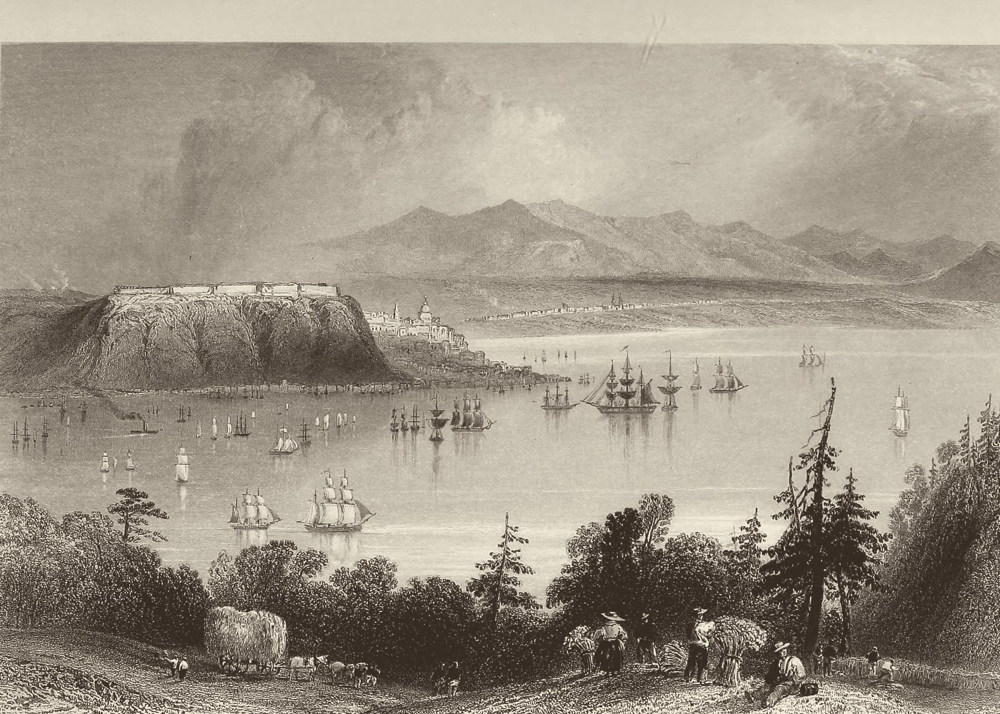
Lévis, across from Quebec, where the journey began. W. H. Bartlett, c. 1838.
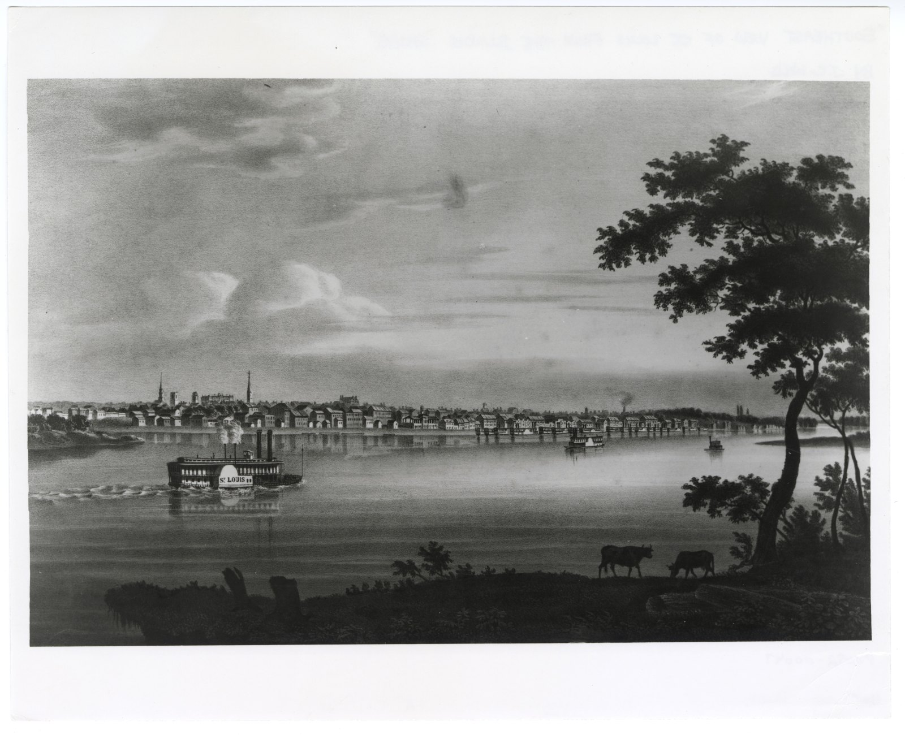
St. Louis, their first winter. J. C. Wild, 1840.
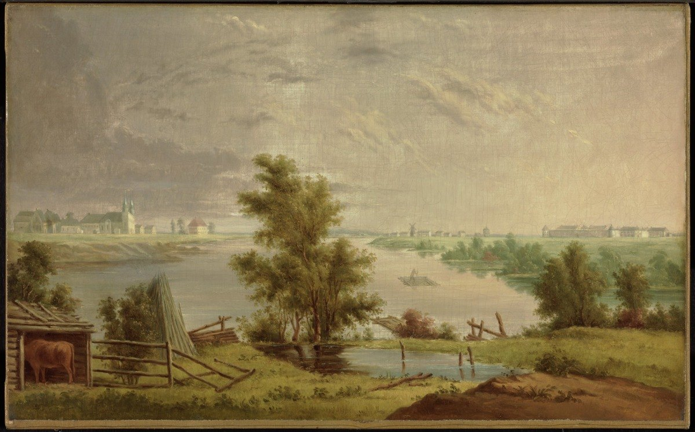
St. Boniface, Red River, 1841–45. Paul Kane, sketched 1846.
The island patent, 25 March 1849. The clerk spelled the name "Lombert." Bureau of Land Management, General Land Office Records.
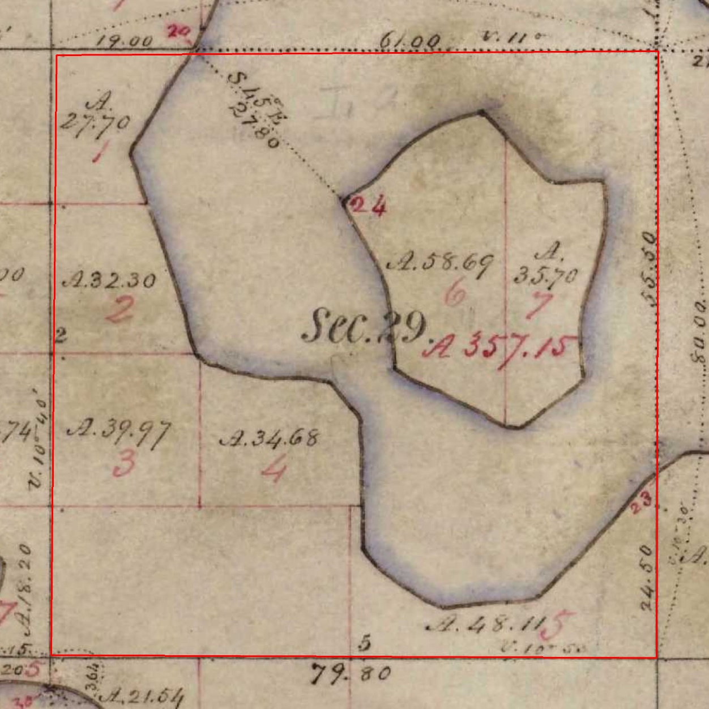
The island on the government survey plat: lots 6 and 7, 58.69 and 35.70 acres, which add up to the patent's 94.39.
What happened to the lake
It was drained in stages over sixty years: for the city's water, then for a farm, then for house lots. It is a short, local history of how the suburbs north of St. Paul were made, and every stage left a mark residents can still find.
1847–48
Federal surveyors walk the shore and map a ring lake around an island.2
1870
The St. Paul Water Company cuts a canal from Lambert Lake to Vadnais Lake to feed the city's water. The lake sat higher than Vadnais, so the canal drained it.3
1881
The county history reports it "drained into Vadnais lake, so much so that a large portion is now occupied as meadow lands."3
1893–94
A. K. Barnum, who owned the island and most of the shore, has a 5,963-foot ditch dug to Vadnais "for the purpose of draining" the lake. The bill ends up before the Minnesota Supreme Court.9
Ramsey County digs County Ditches 13 and 14 through the old bed, with laterals in 1927.11
1930s–40s
House lots are platted and sold on the dry ground.12
1986
The county ditches pass to the Vadnais Lake Area Water Management Organization (VLAWMO). County Ditch 14 is Lambert Creek.11
2005, 2021
VLAWMO builds the Lambert Lake Pond and digs the creek's bends back in. The creek feeds East Vadnais Lake, St. Paul's drinking-water reservoir.11
Today
About 440 private lots, Vadnais Heights Elementary, Community Park and Elmwood Park stand on the old bed.15 Less than an acre of open water is still listed by the state as Lambert Lake.13
The basin today, from Minnesota's LiDAR elevation survey: the hollow of the ring and the hill of the island are still in the ground.
The proposal
Five places, each on public or church land, each on the old lake or on Abraham Lambert's 1849 land. Four ask only for a name or a sign. The fifth asks the city to name a trail it is already planning, and to consider carrying it across the old lakebed.
Today: Elmwood Park, City of Vadnais Heights
Where
3892 Elmwood St, 0.69 acres, on the old island
Decides
Park, Recreation & Trails Commission, then City Council
The ask
Rename the park. Smaller versions: name the new shelter, or add a "Lambert Island, 1849" panel.
Elmwood Park is the only public land on the island Abraham Lambert bought in 1849.15 The city's park plan adds a picnic shelter here, due in fall 2026,14 so a new sign can go in with work already scheduled. "Elmwood" is the street; "Lambert Island" names the place.
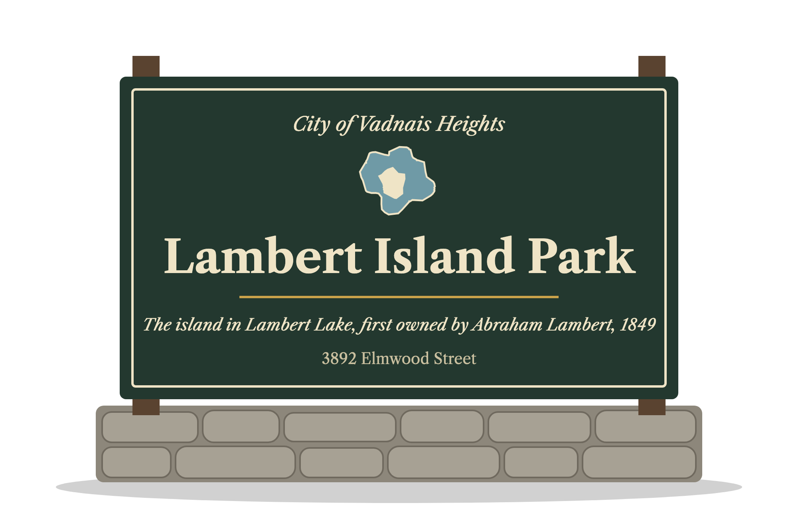
Entrance sign mockup. The style is generic; the city's own sign standard would apply.
Today: Community Park, City of Vadnais Heights
Where
641 County Rd F E, about 35 acres, 34.7 of them inside the old lake
Decides
Park, Recreation & Trails Commission, then City Council
The ask
Rename the park, and put up an interpretive panel showing the old shoreline.
The largest public piece of the lakebed. The city's plan notes that the park "was constructed on poor soils and landfill materials":14 that is the old lake bottom. "Community Park" is a generic name, so the rename costs residents nothing they are attached to, and gives the park a story. "Meadows" is true today: by 1881 the county history already called the drained lake "meadow lands", and it matches Kohler Meadows next door.
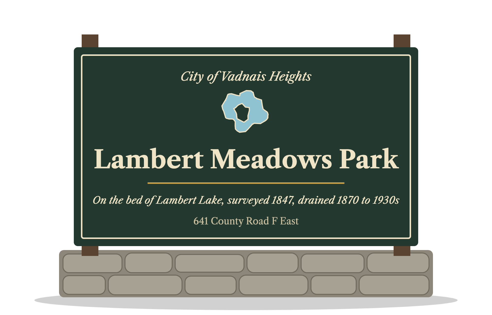
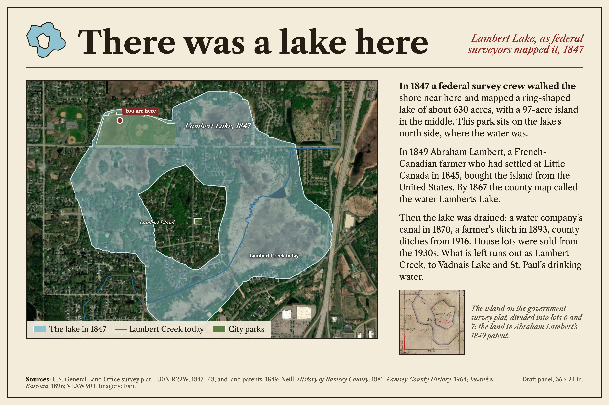
Interpretive panel mockup, 36 × 24 in.: the 1847 lake over today, three short paragraphs, the survey plat and credits.
A route across the old lakebed, about 2.3 km (1.5 miles)
Route
From Community Park, where the city's planned boardwalk to Kohler Meadows begins, along the city's strips beside County Rd F; sidewalk past two stretches of house lots (about 450 m and 210 m); through Lambert Island Park; boardwalk along Lambert Creek on 45 acres of city land.
Decides
City of Vadnais Heights, with VLAWMO (the creek is County Ditch 14) and, for any wetland work, the DNR and the Army Corps of Engineers
The ask
Name the planned boardwalk and its links the Lambert Lake Trail, and add the route across the lakebed to the plan's long-term list.
The city's 2025 plan sets the goal to "add boardwalks to access wetlands as an amenity," and residents named "connecting trails/boardwalks through the wetland north of Community Park" among their most popular routes. The January 2026 addendum plans the link from Community Park to Kohler Meadows.14 Most of this route is already city land. Where houses stand on the old lake, it follows sidewalks.15
proposed trail and boardwalk sidewalk link past house lots. Toggle the city's own 2025 trail priorities on the map.
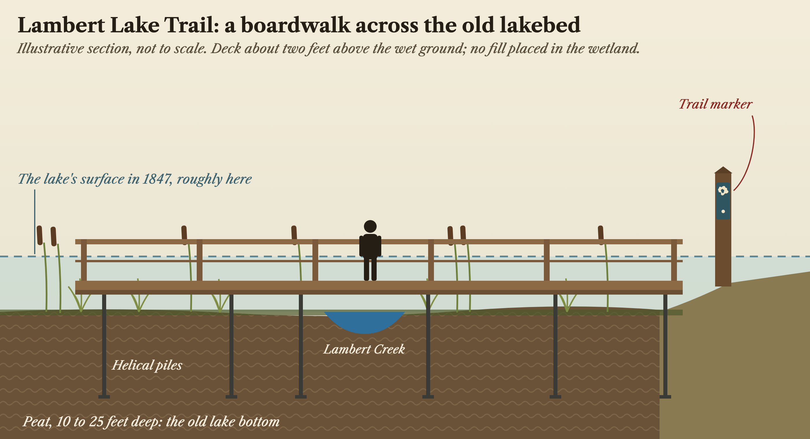
Boardwalk section mockup. The dashed line is roughly where the lake's surface stood in 1847.
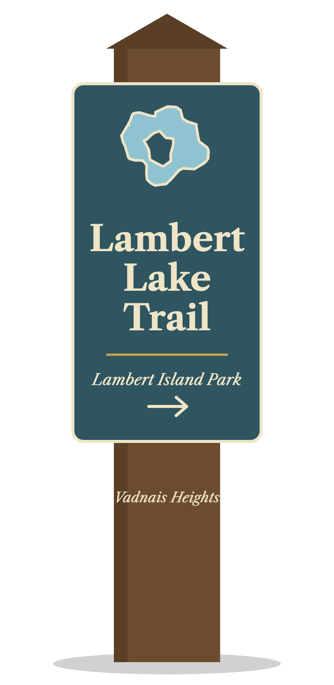
Trail marker mockup: the ring-lake shape from the 1847 survey as the trail's mark, with a pointer to the next named stop.
St. John the Evangelist parish, Little Canada
Where
The cemetery, 19.2 acres; 19.0 of them lie on Abraham Lambert's 1849 lots
Decides
The parish
The ask
A plaque marking his gift of the land.
He gave the land for the cemetery and is buried in it.4,5,15 This is church land, so it needs no public action.
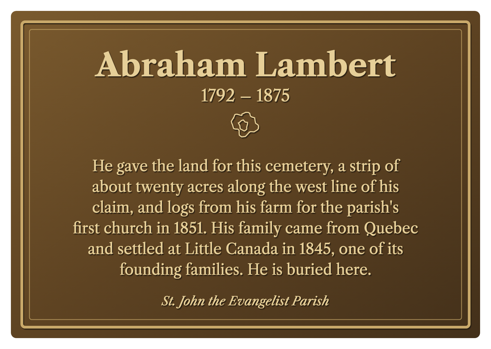
Today: Lake Gervais County Park, Ramsey County
Where
2394 Edgerton St, Little Canada, 4.15 acres; 2.48 of them are Abraham Lambert's 1849 farm
Decides
Ramsey County Parks & Recreation, the Parks & Recreation Commission, then the County Board
The ask
Name the playground for the Lambert farm and add a sign about both founding families. Or, larger: add the Lambert name beside Gervais's, "Gervais–Lambert Park."
More than half of this park is the farm Abraham Lambert bought in 1849.15 The proposal does not take Gervais's name off anything. It puts two founding families of Little Canada side by side on one shore: the first settler and his neighbor.
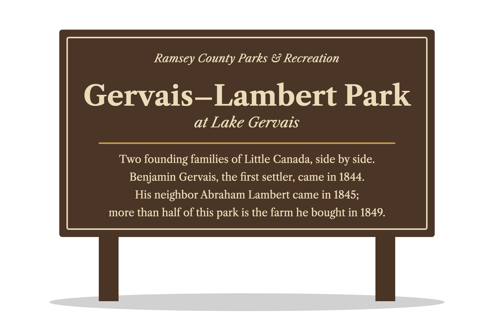
Why it's worth doing
This is a request for names and signs, not land or a new program.
It costs little.Every site is already public or church land. The asks are names, signs, a panel and a plaque.
It rides on work already planned.The Elmwood Park shelter is due in fall 2026. The Community Park boardwalk and the Kohler Meadows link are in the 2025 plan and its 2026 addendum.14
It gives schools a story they can walk to.Vadnais Heights Elementary stands on 9.2 acres of the old lakebed.15 A survey line, a canal, a ditch, a lawsuit and a creek given its bends back are local history, geography and water science in one walk.
It gives a new trail an identity.A named route with a story is easier to sign, map and promote than a connector. The name is already on the creek, a street and a plat; no park in either city carries it.
Grant money exists for it.Minnesota's Legacy Amendment (the Arts & Cultural Heritage Fund) pays for local historical markers, usually with a local historical society applying.17
The partners are already here.The Little Canada Historical Society, VLAWMO, which is restoring Lambert Creek, and the Ramsey County Historical Society, which published the 1964 history this rests on.
The ask
Each body is asked only for what is in its hands. The smaller versions are listed too; any one of them is worth doing.
City of Vadnais Heights
Park, Recreation & Trails Commission, then City Council
Rename Elmwood Park "Lambert Island Park," timed with the new shelter. Or name the shelter, or add a panel.
Rename Community Park "Lambert Meadows Park," with an interpretive panel showing the 1847 shoreline.
Name the planned boardwalk and its links the "Lambert Lake Trail," and add the route across the old lakebed to the plan's long-term list.
White Bear Lake Area Schools
Superintendent and naming task force, then the School Board (Policy 809)
Name part of the school grounds for the lake, an outdoor classroom or nature area, with a panel showing where the water was. The school stands on 9.2 acres of the old lakebed.
Make the lake a walk-to lesson: local history, geography and water science on the school's own ground.
Ramsey County
Parks & Recreation, the Parks & Recreation Commission, the County Board
Name the Lake Gervais playground for the Lambert farm, and add a sign about the Gervais and Lambert families.
Consider "Gervais–Lambert Park" as the park's name.
City of Little Canada
City Council
A resolution or letter supporting the county request at Lake Gervais.
St. John the Evangelist parish
Little Canada
Permission for a plaque at the cemetery marking Abraham Lambert's gift of the land.
Eric Richey, a descendant of Abraham Lambert who lives next to the old lake. [contact] The full story, with every map: millwrightsoftware.com/lambert-lake
Sources
Every claim above traces to one of these. Where the record is unsettled, the text says so.
Bureau of Land Management, General Land Office Records: patent to "Abraham Lombert," lots 6 and 7, sec. 29, T30N R22W, 94.39 acres, Falls St. Croix certificate 137, 25 March 1849 (accession MN2090__.032); patent to Abraham Lambert, lots 1 and 2, sec. 8, T29N R22W, 91.25 acres, certificate 59, same day (MN2090__.005). Every other federal patent in the four sections around the lake dates from 1853 to 1856. glorecords.blm.gov
Government survey plat of T30N R22W, surveyed 1847–48 (MnGeo georeferenced GLO plats; Minnesota Historical Society). The traced shoreline encloses about 530 acres of water and a 97-acre island; the island lots are 58.69 and 35.70 acres.
Edward D. Neill, History of Ramsey County and the City of St. Paul (1881), p. 281 (the lake's name; "drained into Vadnais lake… meadow lands"), p. 289 (the family's route, 1841–45), p. 434 (the St. Paul Water Company's 1870 canal). archive.org
Margaret Whitney Wall, "Little Canada: Heritage from the French," Ramsey County History 1:2 (Fall 1964), pp. 10–12: Gervais the founder, Ducharme the second settler, the Lamberts' arrival with the Ducharmes, the cemetery gift, the church timbers. rchs.com (PDF)
Abraham Lambert's gravestone, St. John the Evangelist Cemetery, Little Canada, as transcribed on Find a Grave, memorial 50657843: the "20 acre strip of land along the west line of his claim," the logs for the 1851 church. findagrave.com
Minnesota Pioneer, 10 April 1850, p. 3, and Minnesotian, 17 January 1852, p. 3 (election judge); Weekly Minnesotian, 1 August 1857, p. 4 (the Little Canada post office). Library of Congress, Chronicling America. loc.gov. The National Archives postmaster appointment record is still to be checked.
Warren Upham, Minnesota Place Names (Minnesota Historical Society): "the first settler was … Benjamin Gervais, who came in 1844." Also City of Little Canada, Historical Society page.
L. G. Bennett, Map of Ramsey County (1867), University of Minnesota Libraries, UMedia.
Swank v. Barnum, 63 Minn. 447 (1896), Minnesota Supreme Court: the 5,963-foot ditch of 1893–94.
U.S. Geological Survey, White Bear 1:62,500 topographic quadrangle (surveyed 1899, published 1902).
Vadnais Lake Area Water Management Organization: watershed plan, Appendix B (County Ditches 13 and 14, 1916; laterals 1927); Lambert Creek, Lambert Lake Pond and history pages (the 1986 transfer, the 2005 pond, the 2020–21 meander). vlawmo.org
Minnesota Historical Society, Davidson Company papers (Stockdale Farms plats, about 1933–48); Atlas of Ramsey County, St. Paul Real Estate Board (1931).
Minnesota DNR Public Waters Inventory, basin 62-30, Lambert Lake (0.68 acre).
City of Vadnais Heights, Parks & Trail System Plan, approved 1 April 2025, and its addendum of 6 January 2026: Elmwood Park's shelter ($93,500, fall 2026), Community Park's soils and boardwalk, the system goals, the public-engagement results, Figure 6.1. cityvadnaisheights.com
Ramsey County parcel data (ParcelData/AttributedData), queried October 2026, clipped to the 1847–48 shoreline and to Abraham Lambert's 1849 lots: ownership and acreage of every site above. Trail lengths are measured on the same data and are approximate.
Ramsey County Parks & Recreation, Lake Gervais County Park page. ramseycountymn.gov
Minnesota's Legacy Amendment, Arts & Cultural Heritage Fund: local historical marker grants, e.g. the White Bear Lake Area Historical Society's markers. legacy.mn.gov
Images: W. H. Bartlett, "Quebec, from the opposite shore of the St. Lawrence," in N. P. Willis, Canadian Scenery Illustrated (1842), Internet Archive; J. C. Wild, "Southeast View of St. Louis from the Illinois Shore," 1840, Missouri Historical Society; Paul Kane, "Fort Garry and St. Boniface," c. 1851–56, National Gallery of Canada. Satellite imagery: Esri. Elevation: Minnesota LiDAR. Sign, panel, plaque and boardwalk drawings are mockups for discussion.